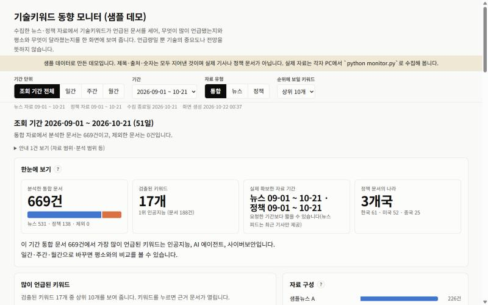
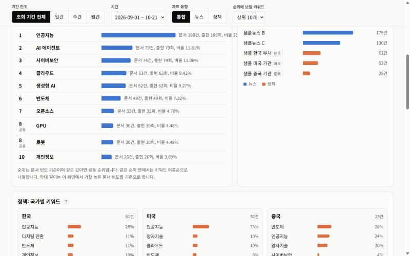
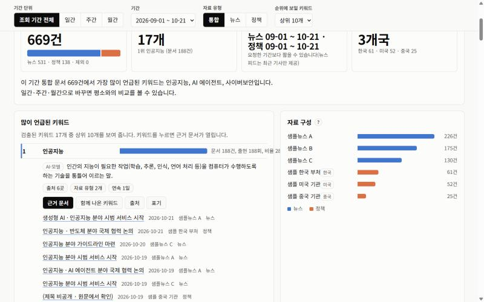
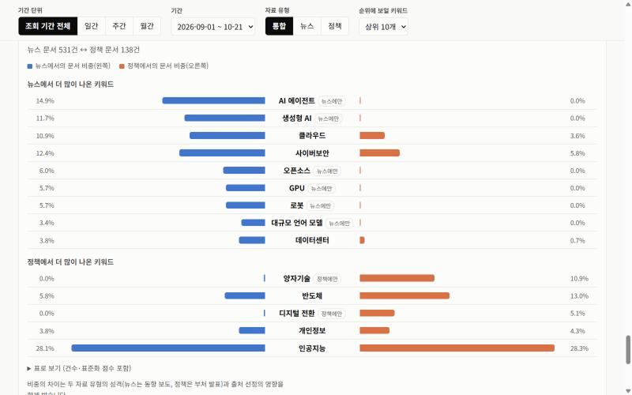
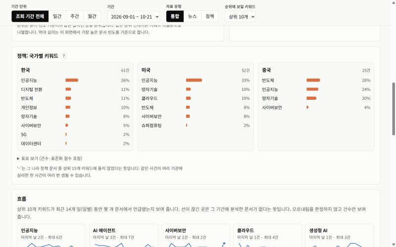

조회 기간 51일 동안 모은 669건을 읽고, 기술 용어 17개를 찾았습니다. 기간 단위와 자료 유형은 위쪽 버튼으로 바꿉니다.

인공지능 188건(28.1%), AI 에이전트 79건, 사이버보안 74건. 같은 건수면 공동 순위로 묶고, 오른쪽에는 출처별로 몇 건을 모았는지 함께 보여 줍니다.

그 키워드가 어느 문서에서 나왔는지 날짜·출처와 함께 열립니다. 재배포가 제한된 출처는 제목 비공개로 두고 원문 주소만 답니다.

AI 에이전트·생성형 AI는 뉴스에만 나오고, 양자기술·디지털 전환은 정책에만 나옵니다. 같은 기간을 두 유형으로 나눠 마주 보게 그립니다.

정책 문서를 발행 기관의 나라로 나눠 봅니다. 한국은 디지털 전환, 미국은 양자기술, 중국은 반도체가 인공지능 다음으로 많이 나왔습니다.
그 기술이 더 중요하다거나 전망이 밝다는 뜻이 아닙니다. 출처를 고른 기준과 확인한 한계를 함께 공개합니다.